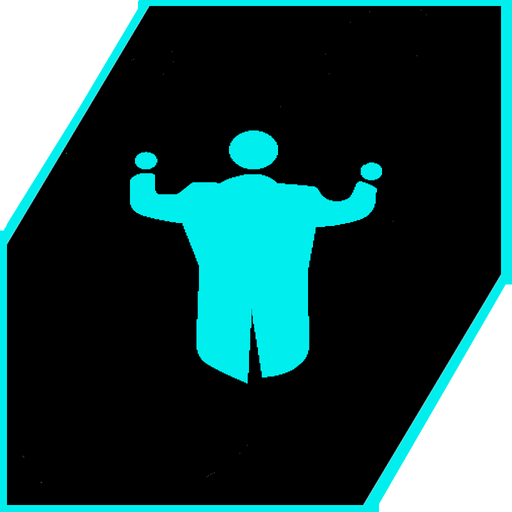
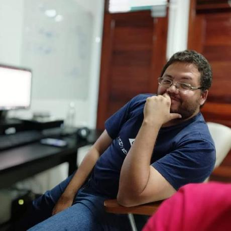

Do africâner orkes: orquestra.
1. Fig. (Música) A arte de reger múltiplos instrumentos em perfeita harmonia.
2. Fig. (Tecnologia) Orquestrar sistemas críticos, servidores e código corporativo para escalar negócios de forma segura e ininterrupta.
Desenho de arquiteturas escaláveis, definição de stack e liderança técnica para estruturar bases sólidas.
Bora conversarCriação de sistemas complexos e APIs robustas do zero. Desenvolvimento focado em alta performance e escalabilidade.
Bora conversarIntegração de LLMs (OpenAI, Gemini) e agentes autônomos para automatizar processos e escalar operações de forma inteligente.
Bora conversarConexão segura, mensageria assíncrona e troca de dados confiável entre diferentes plataformas corporativas.
Bora conversarEvolução de sistemas monolíticos antigos para arquiteturas modernas, com zero downtime e mitigação de riscos.
Bora conversarIdentificação de gargalos, otimização de banco de dados e correção de vulnerabilidades em ambientes críticos.
Bora conversarDesenvolvimento de aplicativos móveis nativos e híbridos focados em experiência do usuário e alta conversão.
Bora conversarCriação de websites corporativos, landing pages e web apps dinâmicos com design moderno e otimização para SEO.
Bora conversarPlataformas de e-commerce, portais de atendimento e aplicações escaláveis desenhadas para o cliente final.
Bora conversar
Sou Fábio Souza, parceiro estratégico de engenharia por trás da Orkes. O propósito da marca é transformar complexidade técnica em operações corporativas seguras, escaláveis e ininterruptas. (...e sim, sou músico de orquestra nas horas vagas).
Tocar em uma orquestra exige alinhar várias frentes para garantir a harmonia perfeita. Como trombonista, levo essa mesma dinâmica para o desenvolvimento: atenção cirúrgica a cada linha de código, alinhamento constante e foco absoluto em evitar retrabalhos.
Se a tecnologia atual gargala o crescimento do seu negócio, é hora de agir. Vamos conversar sobre como preparar sua infraestrutura para o próximo nível.
Falar com o Especialista"Excelente profissional. Dedicado à resolução de problemas, encara desafios de maneira objetiva. Tem ampla experiência com programação e consegue determinar as causas de incidentes com precisão."
"Destaca-se não apenas pela sólida competência técnica, mas também pela forma colaborativa. Demonstra domínio em diversas tecnologias, enfrentando desafios complexos com segurança e eficiência."
"Fabio tem a capacidade de engajar a equipe inteira e liderar todos sempre pelo exemplo."
"Trabalhar ao lado dele foi uma experiência incrível. Sua abordagem proativa e capacidade de enfrentar desafios com discernimento destacam-no como um profissional exemplar e confiável."
"Sua ampla experiência o torna versátil, permitindo que se destaque tanto em sistemas legados quanto em projetos inovadores. Sua preocupação com a equipe o torna uma referência técnica."
"Destaca-se por sua notável proficiência técnica. Demonstra habilidades sólidas em diversas tecnologias e compartilha generosamente seu conhecimento. Seu trabalho resulta em soluções impactantes."
"Profissional extremamente qualificado e focado no desenvolvimento dos projetos, sempre se preocupando com a qualidade na entrega final. Super indico!"
"Excelente profissional. Saliento o seu compromisso em trazer sempre a melhor forma de implementar um recurso técnico e em auxiliar os desenvolvedores menos experientes da equipe."
"Excelente profissional, extremamente confiável e dedicado. Sempre disposto a auxiliar a todos na busca da resolução de arquiteturas complexas apresentadas à equipe."
"Grande profissional que sabe lidar sabiamente com adversidades. Tem uma capacidade notável de resolver incidentes inesperados com empatia e muito conhecimento técnico."
"Profissional dedicado, com vasta experiência em sistemas de grande complexidade. Largo conhecimento em backend, frontend e bancos de dados. Comportamento proativo e visão estratégica."
"Excelente desenvolvedor, sempre buscava assertivamente trazer os melhores resultados para a empresa e a equipe. Um grande parceiro de trabalho!"
"Um grande profissional com excelentes qualidades no desenvolvimento de sistemas. Pessoa bastante capacitada, técnica e de fácil convívio no dia a dia do projeto."
"Excelente profissional! Tem várias competências técnicas e está sempre em busca de aprender mais, inovar e se comprometer agressivamente com os resultados do projeto."
"Possui ótimas habilidades no desenvolvimento de aplicações e APIs. Sempre trabalhou com as melhores práticas profissionais e técnicas de engenharia para agregar valor à empresa."
"Admiro a vontade com que se dedica a aprender e a ânsia por novos desafios. Foca em novas tecnologias e está sempre disposto a explorar o desconhecido para escalar a empresa."
"Excelente profissional e altamente capacitado. Tem bastante ambição em entregar sempre o melhor código e o melhor resultado para a empresa em que atua."
"Um profissional muito focado e disposto aos novos desafios diários. Aprendi ótimas técnicas de desenvolvimento e arquitetura trabalhando ao seu lado."
"Em busca constante do melhor para o projeto e a empresa. Exibe extrema proatividade e busca pela excelência na qualidade da engenharia de software entregue."
"Programador experiente. Muito focado nos processos de engenharia de software e com enorme conhecimento técnico em tecnologias de desenvolvimento para web."
"Profissional dedicado, sempre em busca de novos desafios técnicos e conhecimentos de engenharia. Sabe muito bem trabalhar em equipe e agir com proatividade."
"Profissional centrado e eficiente. Sempre entregando suas demandas com extrema qualidade técnica e baixíssimo índice de retrabalho ou falhas em produção."
"Dedicado, inteligente e cuidadoso com o que desenvolve. Possui perfil analítico e maduro nas atividades técnicas de programação, além de um excelente senso de coletividade."
"Desenvolvedor talentoso e que domina bem as ferramentas modernas para web. Destaca-se pelo alto nível de conhecimento em arquitetura de código e persistência."
"Excelente profissional. Dedicado à resolução de problemas, encara desafios de maneira objetiva. Tem ampla experiência com programação e consegue determinar as causas de incidentes com precisão."
"Destaca-se não apenas pela sólida competência técnica, mas também pela forma colaborativa. Demonstra domínio em diversas tecnologias, enfrentando desafios complexos com segurança e eficiência."
"Fabio tem a capacidade de engajar a equipe inteira e liderar todos sempre pelo exemplo."
"Trabalhar ao lado dele foi uma experiência incrível. Sua abordagem proativa e capacidade de enfrentar desafios com discernimento destacam-no como um profissional exemplar e confiável."
"Sua ampla experiência o torna versátil, permitindo que se destaque tanto em sistemas legados quanto em projetos inovadores. Sua preocupação com a equipe o torna uma referência técnica."
"Destaca-se por sua notável proficiência técnica. Demonstra habilidades sólidas em diversas tecnologias e compartilha generosamente seu conhecimento. Seu trabalho resulta em soluções impactantes."
"Profissional extremamente qualificado e focado no desenvolvimento dos projetos, sempre se preocupando com a qualidade na entrega final. Super indico!"
"Excelente profissional. Saliento o seu compromisso em trazer sempre a melhor forma de implementar um recurso técnico e em auxiliar os desenvolvedores menos experientes da equipe."
"Excelente profissional, extremamente confiável e dedicado. Sempre disposto a auxiliar a todos na busca da resolução de arquiteturas complexas apresentadas à equipe."
"Grande profissional que sabe lidar sabiamente com adversidades. Tem uma capacidade notável de resolver incidentes inesperados com empatia e muito conhecimento técnico."
"Profissional dedicado, com vasta experiência em sistemas de grande complexidade. Largo conhecimento em backend, frontend e bancos de dados. Comportamento proativo e visão estratégica."
"Excelente desenvolvedor, sempre buscava assertivamente trazer os melhores resultados para a empresa e a equipe. Um grande parceiro de trabalho!"
"Um grande profissional com excelentes qualidades no desenvolvimento de sistemas. Pessoa bastante capacitada, técnica e de fácil convívio no dia a dia do projeto."
"Excelente profissional! Tem várias competências técnicas e está sempre em busca de aprender mais, inovar e se comprometer agressivamente com os resultados do projeto."
"Possui ótimas habilidades no desenvolvimento de aplicações e APIs. Sempre trabalhou com as melhores práticas profissionais e técnicas de engenharia para agregar valor à empresa."
"Admiro a vontade com que se dedica a aprender e a ânsia por novos desafios. Foca em novas tecnologias e está sempre disposto a explorar o desconhecido para escalar a empresa."
"Excelente profissional e altamente capacitado. Tem bastante ambição em entregar sempre o melhor código e o melhor resultado para a empresa em que atua."
"Um profissional muito focado e disposto aos novos desafios diários. Aprendi ótimas técnicas de desenvolvimento e arquitetura trabalhando ao seu lado."
"Em busca constante do melhor para o projeto e a empresa. Exibe extrema proatividade e busca pela excelência na qualidade da engenharia de software entregue."
"Programador experiente. Muito focado nos processos de engenharia de software e com enorme conhecimento técnico em tecnologias de desenvolvimento para web."
"Profissional dedicado, sempre em busca de novos desafios técnicos e conhecimentos de engenharia. Sabe muito bem trabalhar em equipe e agir com proatividade."
"Profissional centrado e eficiente. Sempre entregando suas demandas com extrema qualidade técnica e baixíssimo índice de retrabalho ou falhas em produção."
"Dedicado, inteligente e cuidadoso com o que desenvolve. Possui perfil analítico e maduro nas atividades técnicas de programação, além de um excelente senso de coletividade."
"Desenvolvedor talentoso e que domina bem as ferramentas modernas para web. Destaca-se pelo alto nível de conhecimento em arquitetura de código e persistência."
Tocar em uma orquestra exige atenção simultânea a várias frentes: ler a partitura, acompanhar a regência do maestro e ouvir o companheiro de naipe para garantir a afinação perfeita do grupo. Como trombonista, o instrumento me cobra ainda uma acurácia milimétrica na posição das notas. Essa mesma dinâmica molda a minha atuação como desenvolvedor: alinhamento constante com a liderança, colaboração contínua com os companheiros de time e atenção cirúrgica a cada linha de código, garantindo a harmonia do projeto e evitando o retrabalho.